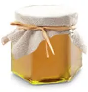
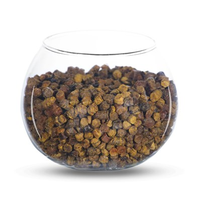
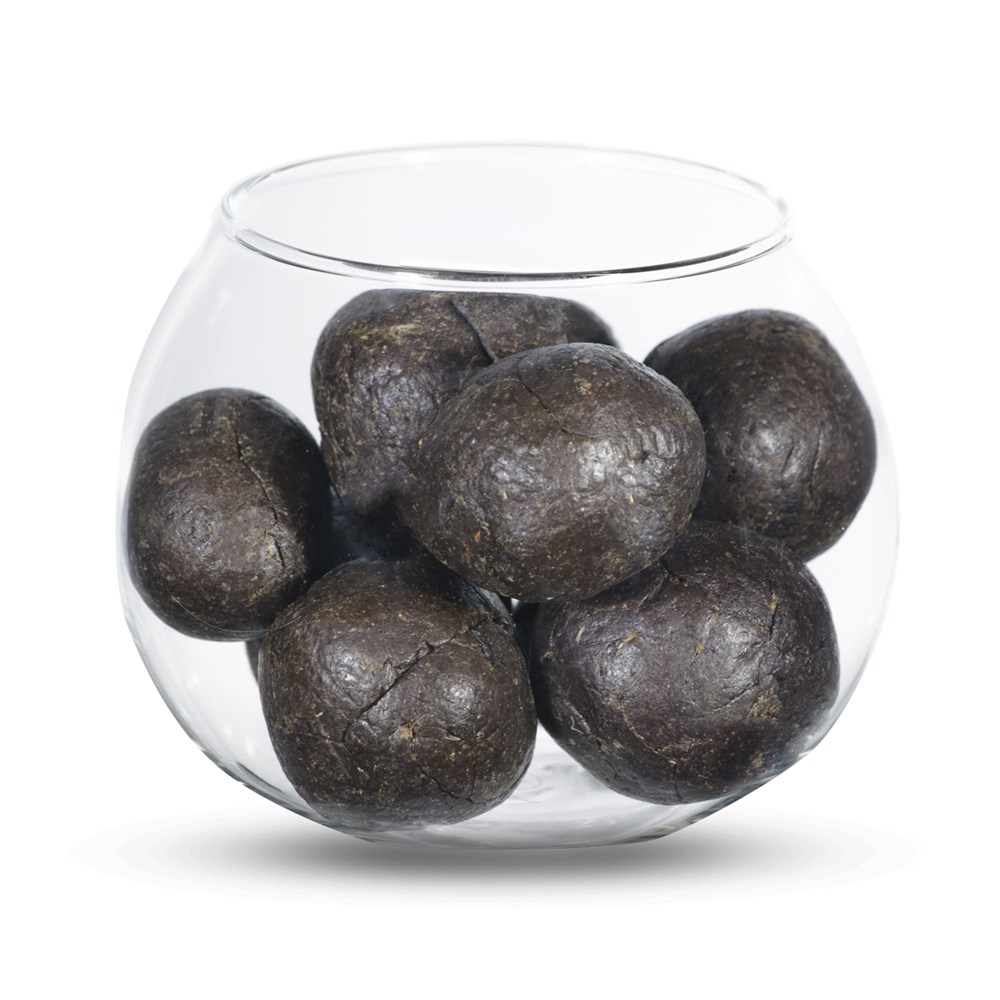

    <!-- Products -->
    <section class="products" id="products">
        <div class="container">

            <h2 class="section__title">Продукты пчеловодства</h2>

            <div class="products__inner">

                <div class="products-item">
                    
                    <h3 class="products-item__title">Донниковый мёд</h3>
                    <div class="products-item__descr">Элитный, травяной, светлый сорт мёда. Богат витаминами группы B,
                        микроэлементами. Применяется в народной медицине и косметологии</div>
                    <a href="#" class="products-item__link">Подробнее</a>
                    <hr>
                    <div class="products-item__price">
                        500 рублей за литр
                    </div>
                </div>
                <!-- /.products-item -->

                <div class="products-item">
                    
                    <h3 class="products-item__title">Перга</h3>
                    <div class="products-item__descr">"Природный БАД", пыльца-обножка, собранная пчёлами с цветков
                        растений, сложенная и утрамбованная в соты, залитая сверху мёдом. Уникальное сочетание ферментов
                        и аминокистлот</div>
                    <a href="#" class="products-item__link">Подробнее</a>
                    <hr>
                    <div class="products-item__price">
                        200 рублей за 100 грамм
                    </div>
                </div>
                <!-- /.products-item -->

                <div class="products-item">
                    
                    <h3 class="products-item__title">Прополис</h3>
                    <div class="products-item__descr">Смолистое вещество, пчелиный "клей", продукт жизнедеятельности
                        насекомных, природный антисептик и антибиотик. Широй спектр лечебных свойств признан не только
                        народной, но и традиционной медициной</div>
                    <a href="#" class="products-item__link">Подробнее</a>
                    <hr>
                    <div class="products-item__price">
                        300 рублей за 50 грамм
                    </div>
                </div>
                <!-- /.products-item -->

            </div>
            <!-- /.products__inner -->

        </div>
        <!-- /.container -->
    </section>
    <!-- /.products -->